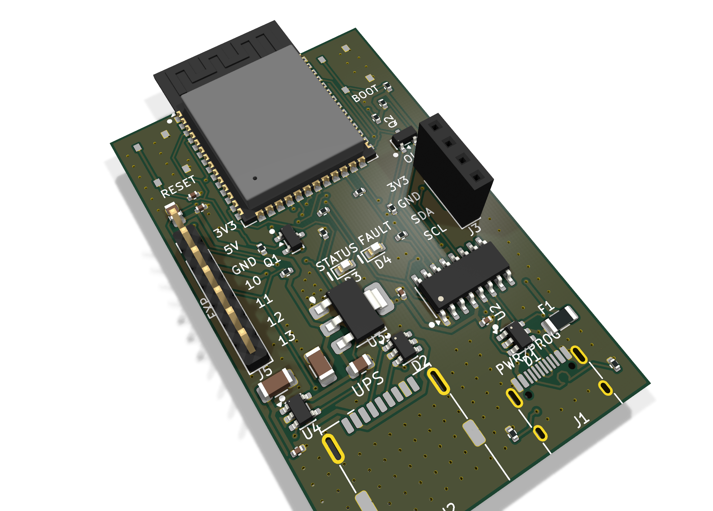

upsmon already understand — so nothing needs a
plugin, a bridge or a driver.Parses the USB HID Power Device descriptor at runtime rather than hard‑coding a UPS. Whatever your UPS reports, it forwards. Validated on a real APC Back‑UPS RS 1000G: 86 fields decoded into 20 NUT variables, no vendor quirk needed.
VBUS to the UPS runs through a current‑limited load switch on a GPIO. When a UPS interface locks up — and they do — firmware cycles its power instead of someone walking to the closet.
Wi‑Fi drops are handled with a non‑blocking retry, not a watchdog reboot. The board also survives the UPS being unplugged, replugged and power‑cycled mid‑session without a reset.
| Controller | ESP32‑S3‑WROOM‑1‑N4 dual‑core Xtensa LX7, 4 MB flash |
| Wireless | Wi‑Fi 802.11 b/g/n, 2.4 GHz PCB antenna, Bluetooth disabled |
| UPS port | USB‑A host, USB 2.0 full speed 12 Mbps, HID Power Device class |
| VBUS to UPS | Switched, 1 A current limit fault flag to firmware, 100 µF bulk |
| Power & console | USB‑C: 5 V in, programming and serial on one connector |
| Protection | ESD array on both USB ports 2 A resettable polyfuse |
| Primary output | NUT server, TCP 3493 read‑only protocol subset |
| Secondary output | MQTT with Home Assistant discovery |
| Setup | Web UI over Wi‑Fi; SoftAP for first‑run provisioning |
| Discovery | mDNS — ups‑adaptor.local |
| Expansion | 4 × GPIO + 3V3 + 5V + GND I²C header for a 128×64 OLED |
| Board | 36 × 58 mm, 2 layer surface mount, case‑clip mounting |